PT
EN
Structures of Permanence é um projeto de longa duração que reflete sobre persistência, repetição e presença no espaço construído. Mais do que documentar lugares, estas imagens procuram compor um arquivo visual de estruturas que permanecem — mesmo quando a sua função se torna instável, ambígua ou obsoleta.
Algumas fotografias resultam de longas exposições com variação da distância focal, reforçando a ideia de deslocamento silencioso no interior da própria matéria.
Structures of Permanence is a long–term photographic project reflecting on persistence, repetition and structural presence within the built environment. Rather than describing specific places, these images construct a visual archive of forms that remain — even when their function becomes unstable, ambiguous or obsolete.
Some photographs are made in single long exposures with focal-length variation, emphasising a quiet sense of displacement within the structure itself.
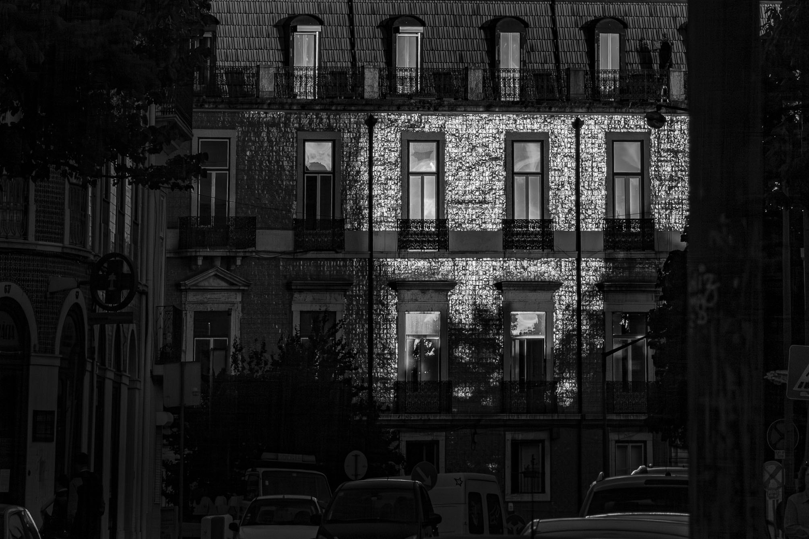
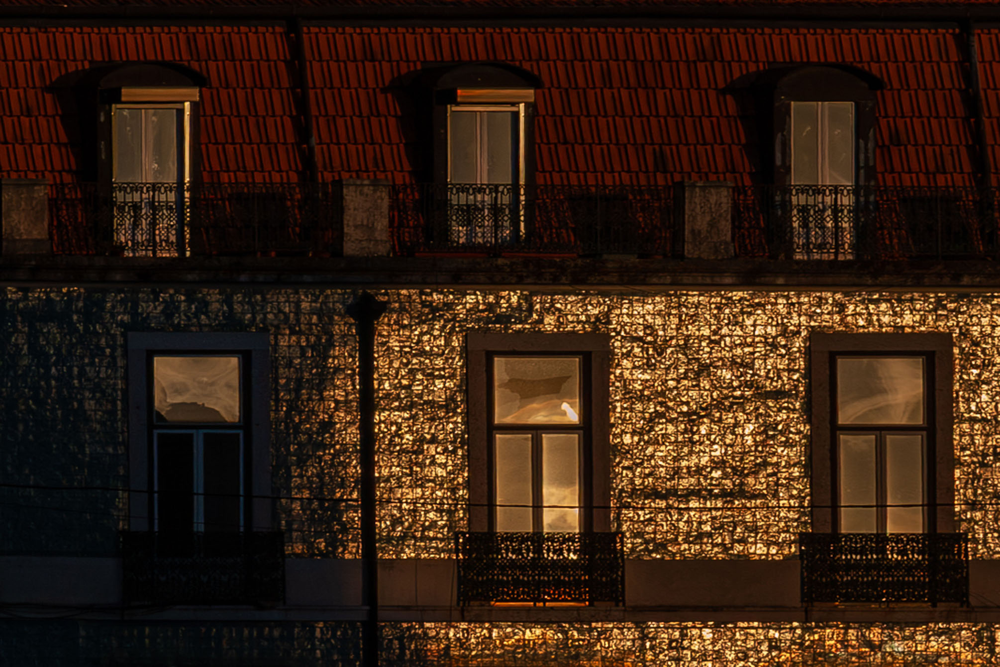
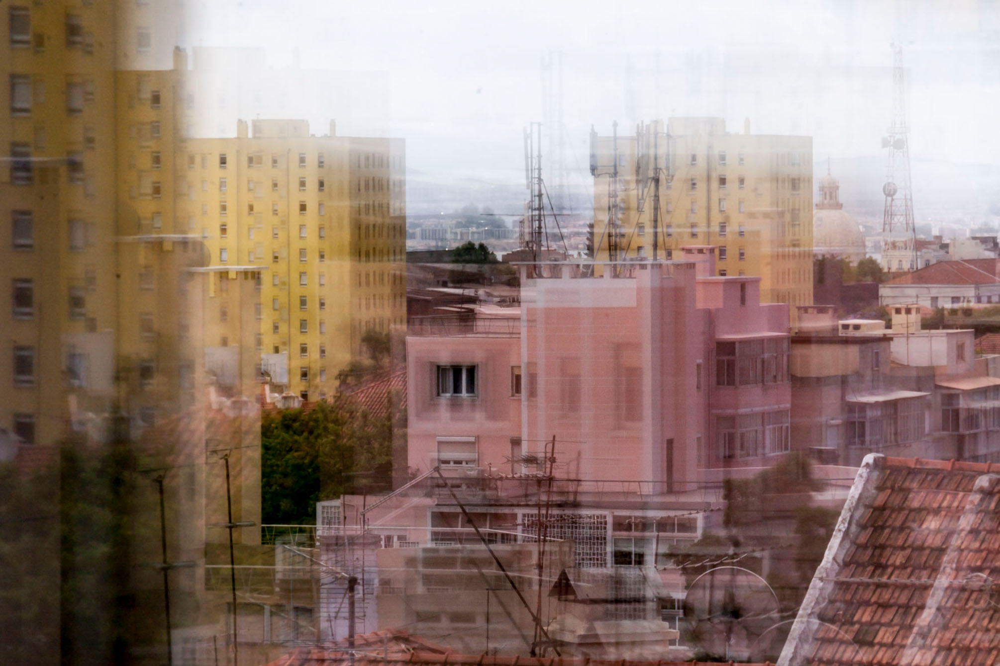
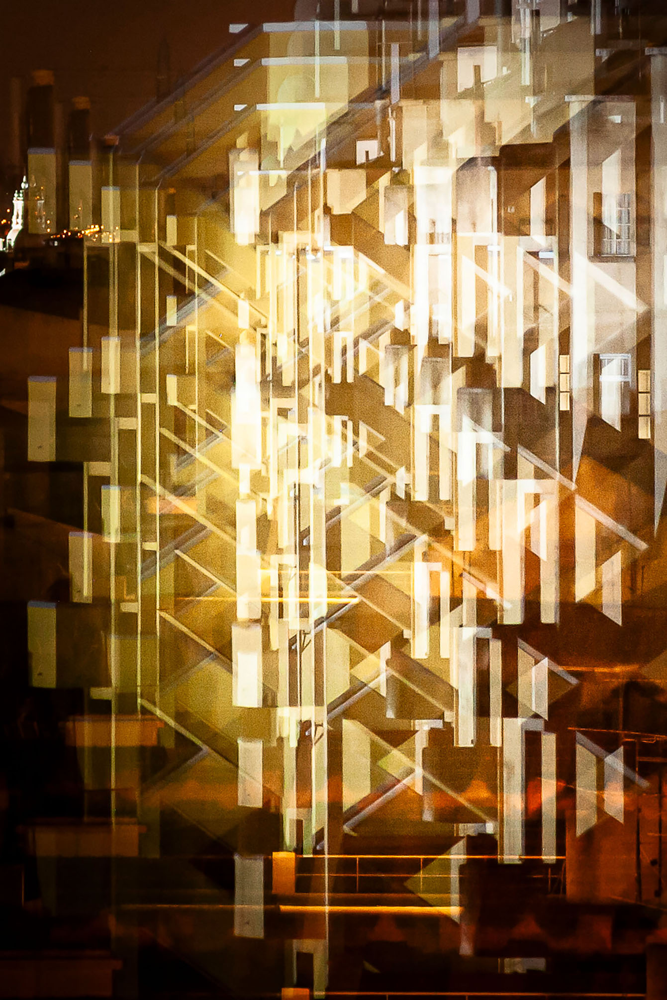
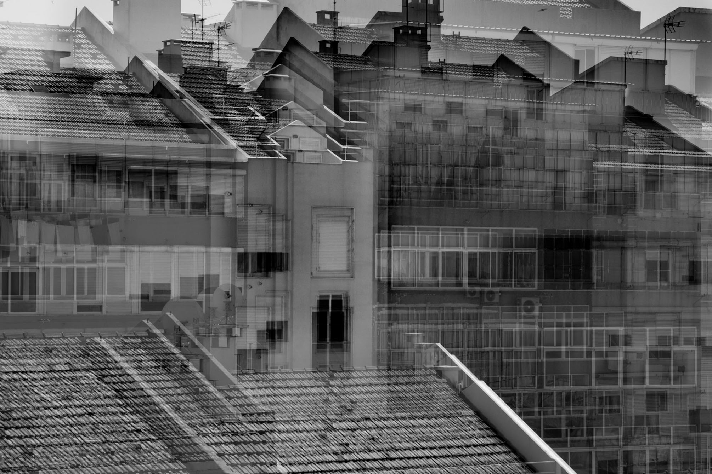
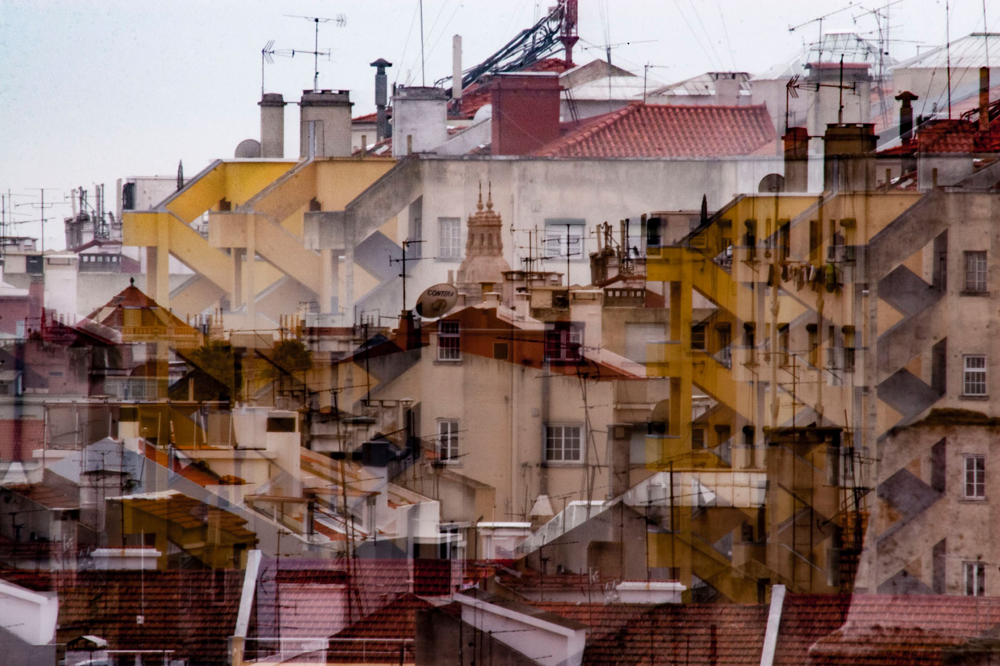
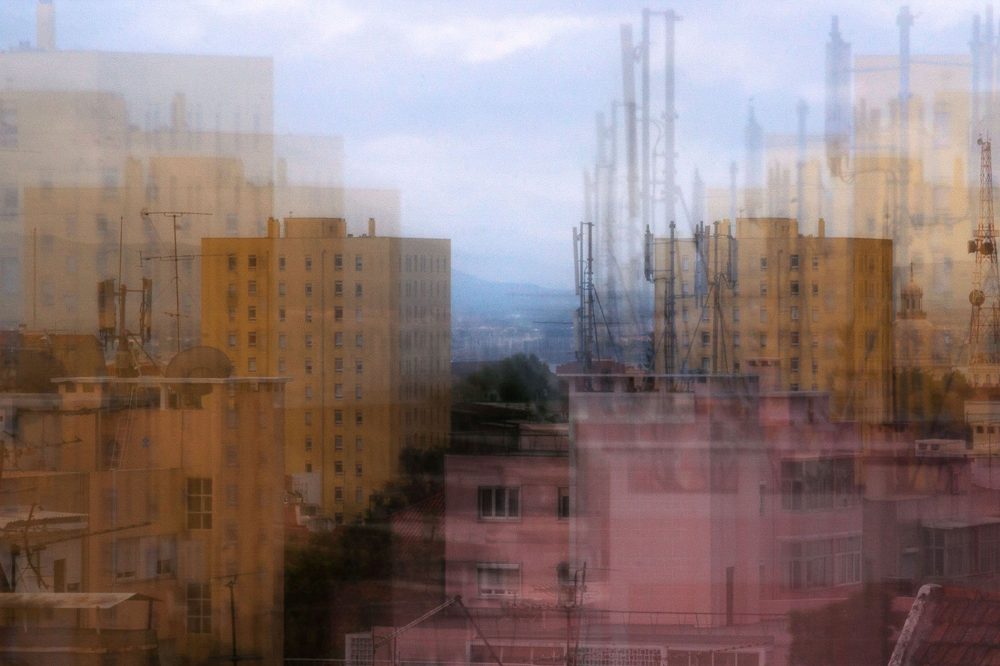
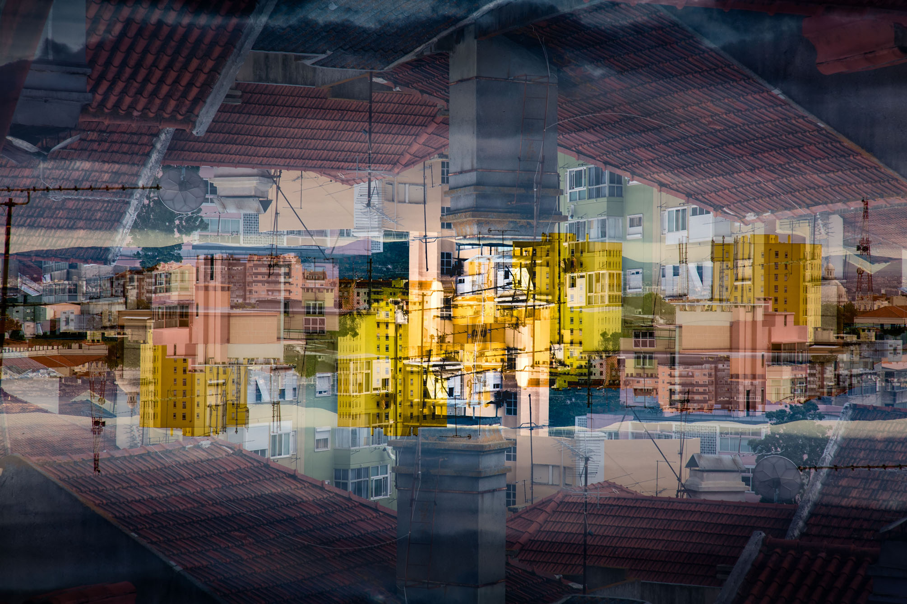
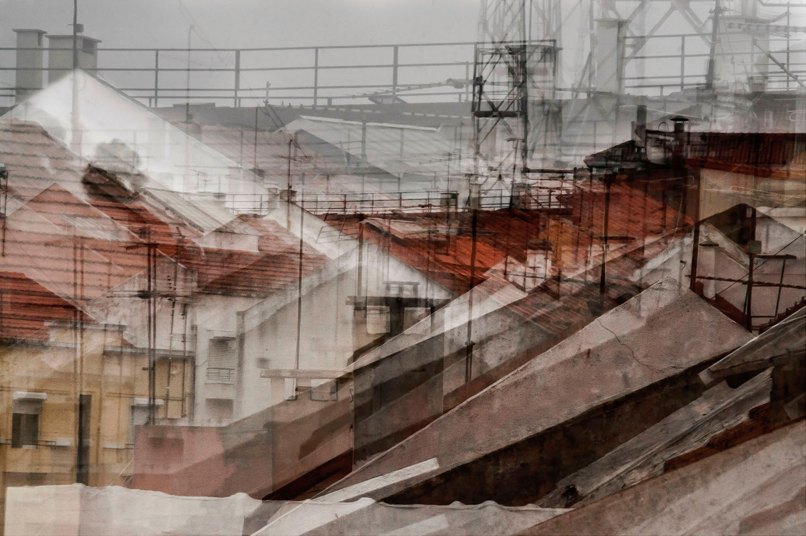
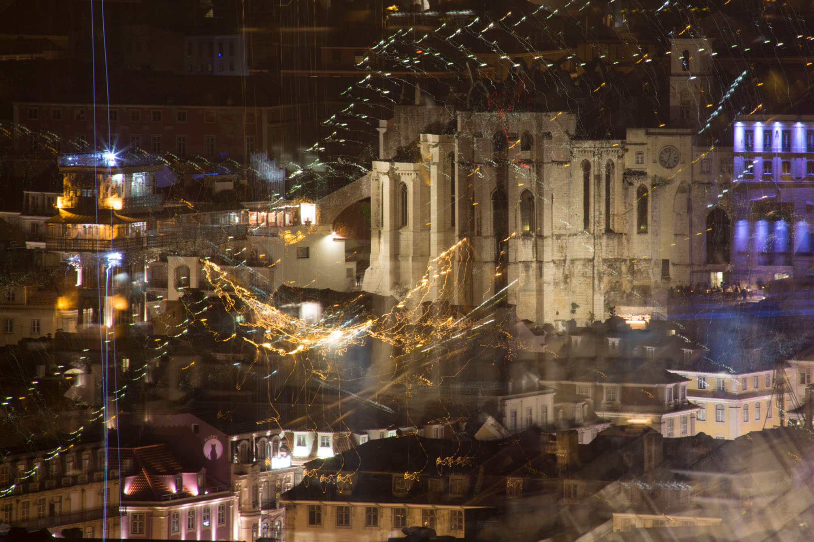
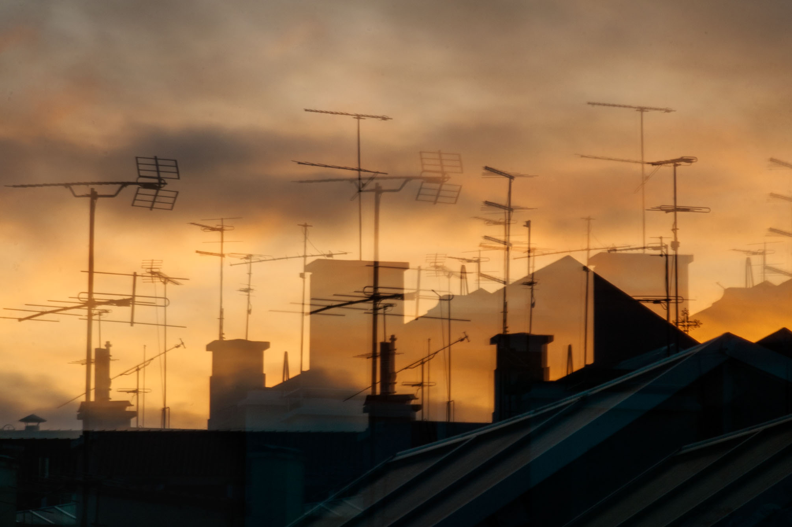
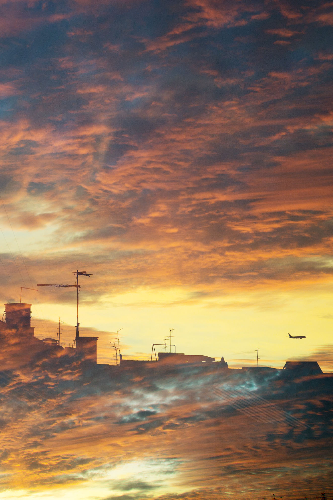

❮
❯